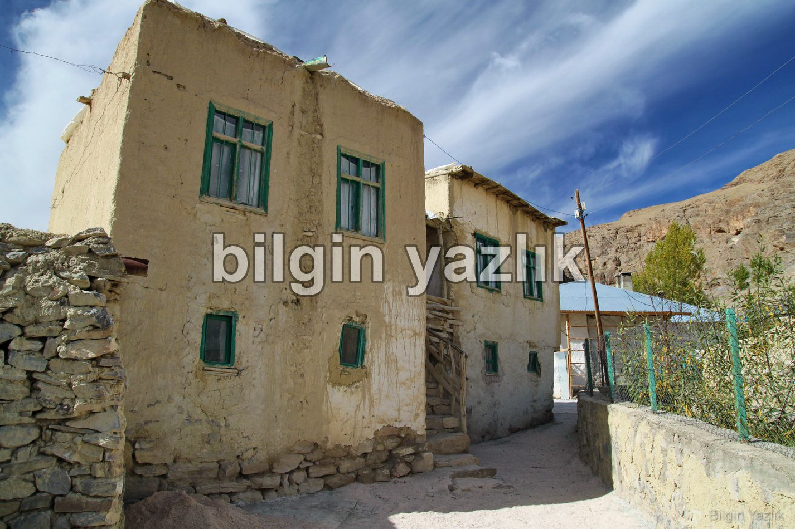
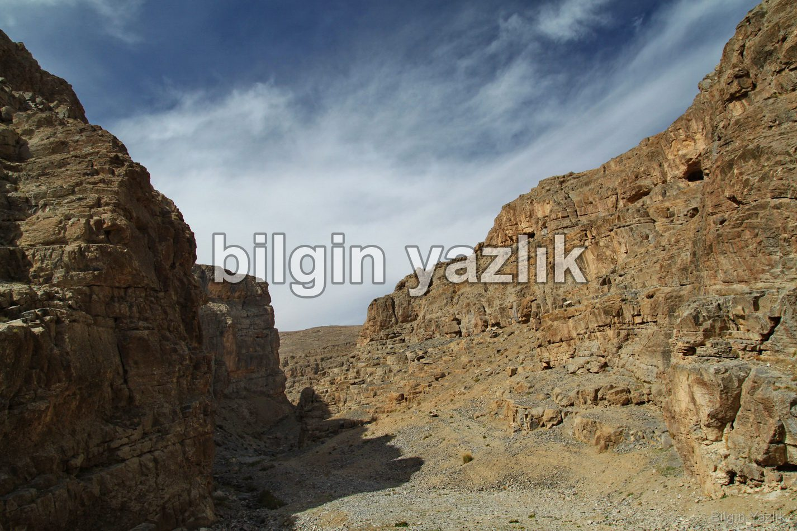
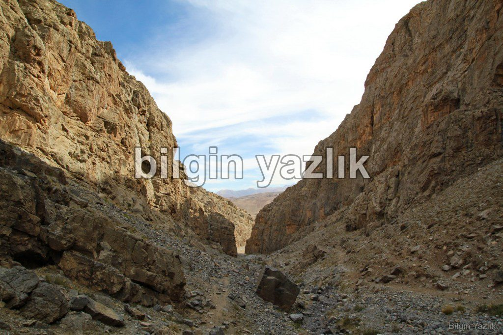
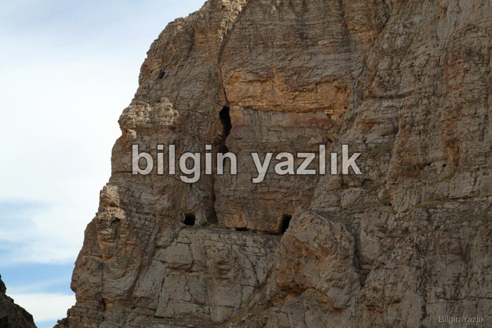
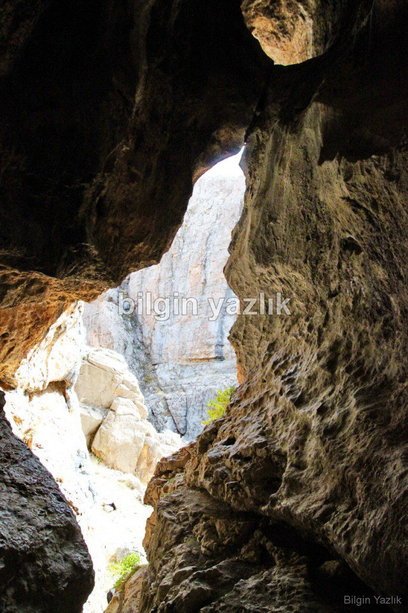
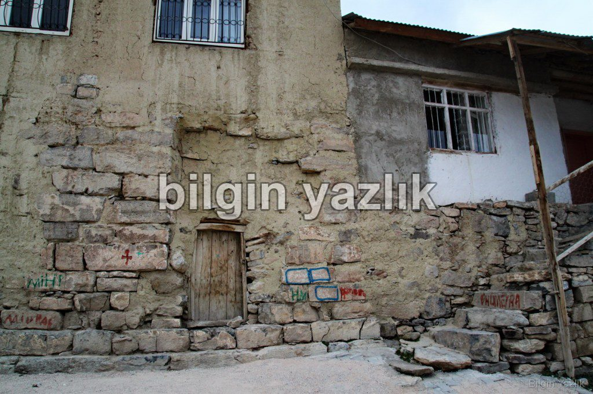

Yedisalkım (Put ya da Pût) Köyü
Van şehir merkezine yaklaşık 85 km mesafede bulunan Yedisalkım (eski adı ile Put ya da Pût) köyüne yaklaşık 1,5 saatlik bir sürüş ile ulaşılabilmektedir. Köye kadar tamamen asfalt yol bulunmaktadır ve otomobil ile ulaşımı mümkündür. Köye ulaşabilmek için Güzelsu (Hoşap)’ya varmadan hemen önce tabelalı yola sapılmaktadır.
Yedisalkım köyünün eski adı Put ya da Pût olarak telaffuz edilmektedir. Köyün batısında yer alan Başet kanyonu oldukça güzel bir manzaraya sahiptir ve irili ufaklı onlarca mağaraya ev sahipliği yapmaktadır. Bu mağaralardan en ünlüsü “Kızların Mağarası” olarak adlandırılan ve içerisinde tarih öncesi dönemlerden kalma mağara resimleri barındıran mağaradır. Bu mağara köyün en yakın evine yaklaşık 1 km mesafede yer almaktadır ve kanyonun zeminden yaklaşık 80 metre yüksektedir. Mağaraya çıkan bir yol bulunmamaktadır ve özel ekipman olmaksızın bu mağaraya erişim imkansızdır.
Köyde bugün üstünde konut yer alan eski bir de kilise bulunmaktadır, kilise duvarlarından sökülen taşlar bugün birçok evin duvarlarında devşirme taş olarak kullanılmış durumdadır.
Köyün çeşmesinden akan buz gibi suyun, kutsal olduğuna inanılan ve köyün batısında yer alan Başet dağının zirvesinden geldiğine inanılmaktadır.
Köyde bugün yaklaşık 40 hane bulunmaktadır, ilkokul ve ortaokul eğitimi verilen aktif bir okul bulunmaktadır ve yaklaşık 20 öğrencisi vardır. Köylü büyük oranda hayvancılıkla ile geçinmektedir.
Köyde elektrik var, ancak telefon hattı bulunmamaktadır, GSM sinyalleri köye ulaşmakta ama Edge seviyesinde internete erişilebilmektedir.
Köyde gezerken hiç çöp kovasına rastlamadım, bu durum aslında köydeki tüm atıkların tabii olduğunu göstermesi açısından oldukça değerli idi.






Bu yazı taliyol arşivinden taşınmıştır. · özgün kayıt